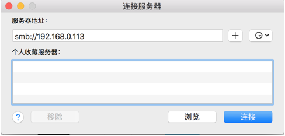
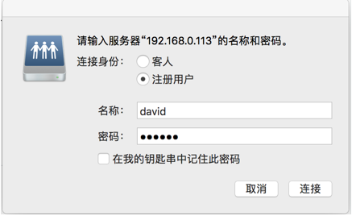
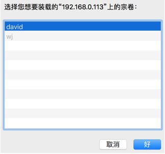
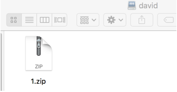

配置samba使用用户名和密码登录
1、当samba配置文件中的secure设置为user的时候，需要正确的用户名和密码才能登录。
|
|
2、管理账户和密码
samba默认使用tdbsam数据库管理机制来统一管理用户名和密码，使用的命令是pdbedit，命令如下
|
命令 |
说明 |
|
pdbedit -L |
列出samba用户列表 |
|
pdbedit -Lv |
列出samba用户详细信息 |
|
pdbedit -Lw |
列出smbpasswd格式的用户 |
|
pdbedit _a wj |
增加用户wj |
|
pdbedit _x wj |
删除用户wj |
|
pdbedit _c “[D]” _u wj |
暂停用户wj |
|
pdbedit _c “[]” _u wj |
回复用户wj |
3、添加用户，必须确保这个用户存在于你的Linux系统中
|
|
4、重启smb服务
|
|
5、启动smb服务
|
|
6、从windows测试，按下快捷键“window+r”，在弹出的窗口输入命令“smb:\\192.168.0.113”，要求输入用户名和密码，匿名用户也无法登陆。


用户登录后，只能查看自己的家目录，不能选择其他目录


Copyright@david zhytwj2018@163.com